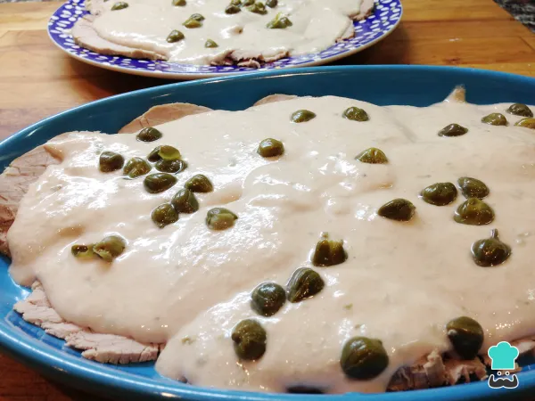

Vitel Tone Receta

Descripcion
La receta de vitel tone es de origen italizano, concretamente de la region de Piamonte, aunque es mucho mas popular
en Argentina. En este pais es costumbre cocinar el vitello tonnato, como originalmente se llama, durante las fiestas
de Navidad, ya que se trata de un plato que se sirve frio y en Argentina las recetas frias para combatir el calor del verano
Ingredientes
Ingredientes para el vitel tone
- 800 gramos de redondo de ternera o peceto.
- 2 cucharadas soperas de alcaparras.
- 250 mililitros de mayonesa.
- 1 zanahoria.
- 1 chorro de caldo de carne.
- 1 chorro de aceite de oliva.
- 100 mililitros de vino blanco.
- 1 pizca de pimienta negra.
- 1 pizca de sal.
Ingredientes para la salsa vitel tone
- 1 rama de apio.
- 1 hoja de laurel.
- 1 pizca de romero.
- 1 pizca de perejil.
- 5 latas de atun.
- 6 filetes de anchoas.
Pasos a seguir de la receta
- Cuece la carne en una olla con agua, las verduras troceadas (zanahoria y apio), las hierbas aromaticas (laurel, romero y perejil)
, un chorro de aceite de oliva y el vino blanco. Salpimienta al gusto y cocina a fuego medio durante una hora y media
aproximadamente, aunque el tiempo final dependera del tamano de la pieza. Para que el vitel tone quede en su punto, es importante
cocinar la pieza entera.
- Retira la carne de la olla cuando este bien hecha y deja que se enfrie. El caldo obtenido de su coccion es perfecto
para preparar otras recetas, de manera que no lo desperdicies. De hecho, en esta misma receta de vitel tone necesitaras
utilizar una pequena cantidad.
Truco:para cortar mejor la carne, puedes reservarla en la nevera durante toda una noche.
- Corta la ternera en filetes muy finos y reservalos en un plato mientras preparas la salsa vitel tone.
- Para hacer la salsa, introduce en la licuadora la mayonesa, el atun, las anchoas y las alcaparras.
Vierte un poco de caldo de la coccion de la carne y tritura hasta conseguir una crema homogenea. En funcion de si
quieres que el vitl tone quede mas liquido o menos, deberas anadir mas caldo o no.
- Ya solo queda cubrir la carne con la salsa y anadir algunas alcaparras por encima para decorar.
Fuente de la Receta